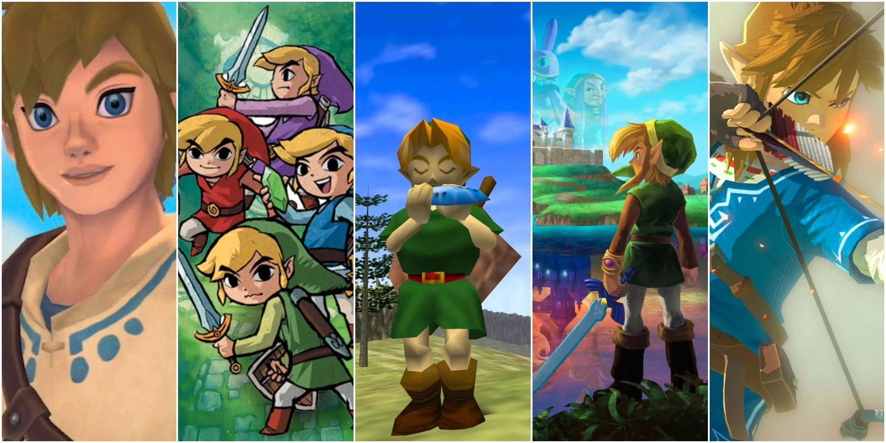

The Legend of Zelda is a video game series that takes place in the fictional medieval-inspired Kingdom of Hyrule,[2] often led by the titular Princess Zelda. The protagonist of the series is Link, a child or young man who is destined, in most of the games, to save Hyrule from the clutches of the evil warlock Ganondorf or his alter-ego, the dark beast Ganon. Some of the games feature additional protagonists such as Navi the fairy, Ezlo the talking cap, or Midna the Twili, who serve as sidekicks throughout the course of the game, or different antagonists, such as Vaati the Wind Mage, the General of Darkness General Onox, or the Usurper King Zant.
